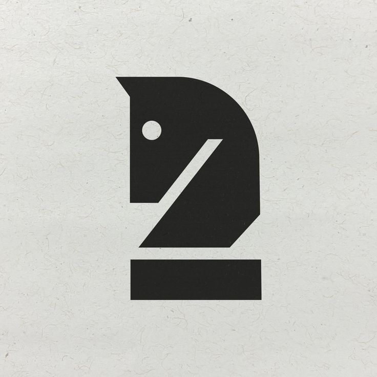
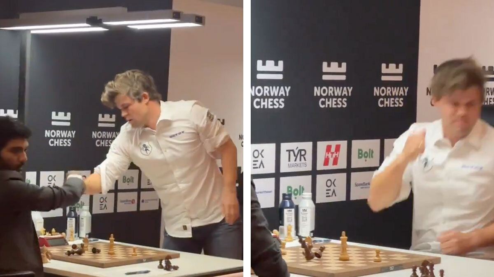
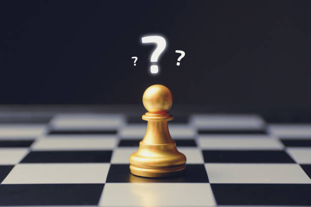
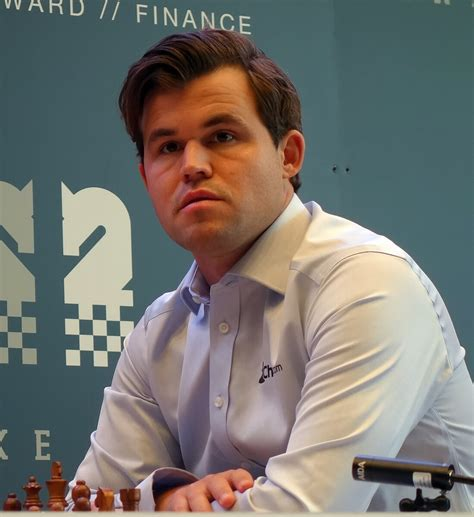
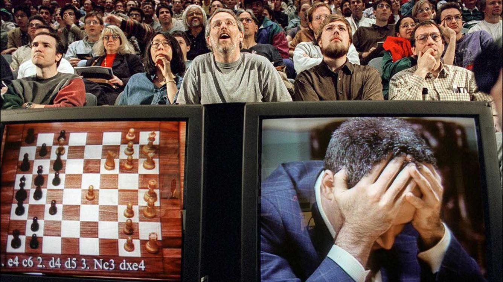
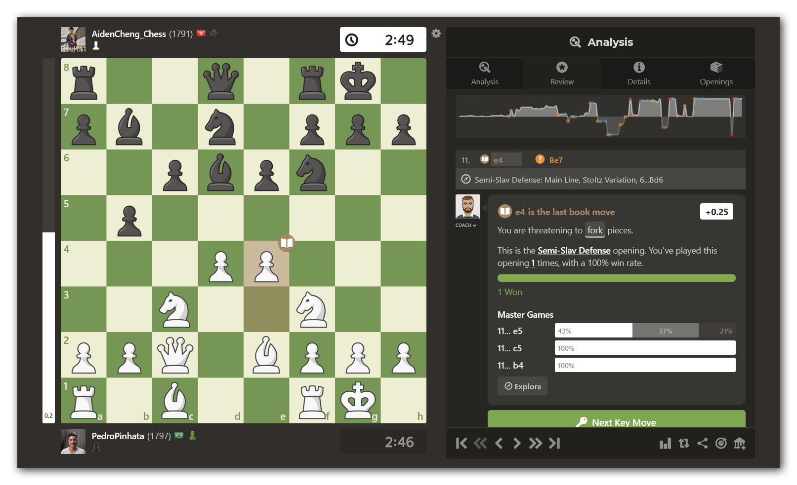
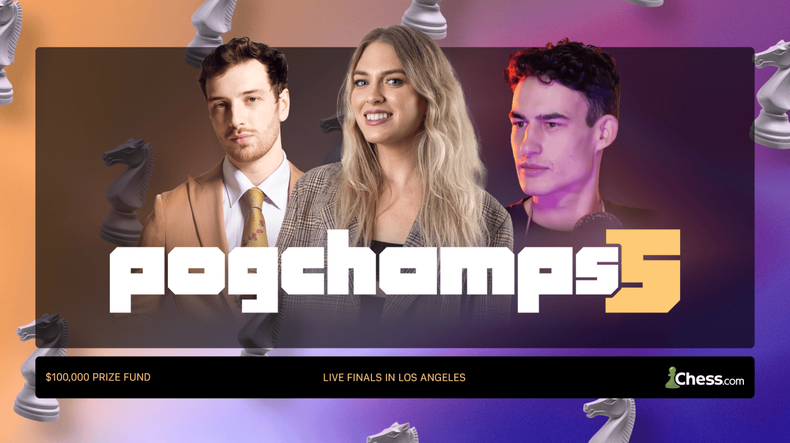
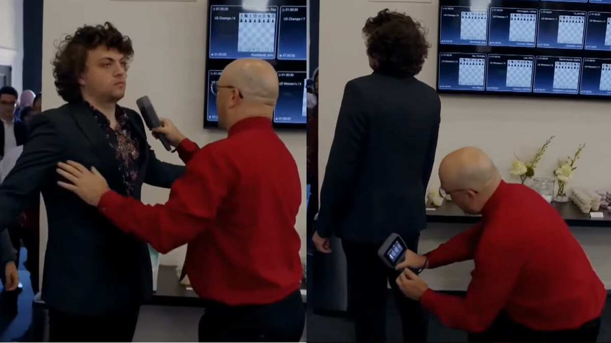
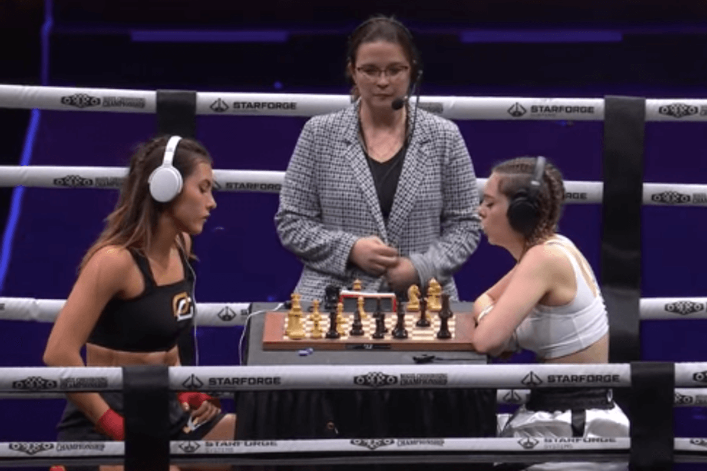

refresh
Schach
spielen

Definition
Schach ist ein Begriff, der auf die Übersetzung von „König“ zurückgeht ist weit mehr als nur ein Spiel; es ist eine Kunst der Strategie. Zwei Kontrahenten treten gegeneinander an und bewegen abwechselnd ihre Figuren über das Brett, wobei jeder Zug sorgfältig geplant sein muss. Die Partie gipfelt in dem Moment, in dem der gegnerische König so präzise attackiert wird, dass kein Ausweg mehr existiert. Wenn der Gegner keinen validen Zug mehr besitzt, um seinen König zu schützen, ist das Spiel beendet und der Sieg ist besiegelt.
Mehr info
Vorteile vs. Nachteile - Unterschied?

Schach-Diskussion
Was man durch Schach spielen gewinnt
- Konzentration⬆⬆️
- Problemlösungsfähigkeiten⬆️
- Gedächtnis⬆️
Kein wunder warum Schach als ein 'Spiel der Inteligenten' bezeichnet wird.

Schach-Diskussion
Schach Nachteile
- Großer Zeitaufwand⌛⌛
- Hohe Komplexität 🎓️💡
- Gedult und Frustration 🧊🌡️
Das zeigt, wie krass der Druck im Schach ist. Sogar Magnus Carlsen ist nach einem
Fehler so ausgerastet, dass er auf den Tisch gehauen hat und die Figuren flogen.

Schach-Meinung
Schach ist verwirrend...
Schach hat sowohl als Vorteile als auch Nachteile. Für einige Leute überwiegen die Vorteile
und für andere die Nachteile. Am ende des Tages ist es nur ein Spiel und die Leute die es
spielen sollten Spaß haben, wenn das spiel kein Spaß macht, sollte man es nicht spielen.
Ganz einfach.
Top Schach Spieler
#2 GM Schachspieler, Streamer & YouTuber
Hikaru Nakamura
Hikaru Nakamura ist viermaliger USA-Meister
und einer der bestplatzierten Schachspieler
der Welt. Nakamura, geboren 1987, ist aufgrund
seines geradlinigen Spielstils als „H-Bombe“
bekannt. Er spielt immer um den Sieg und
bietet nie ein Unentschieden an.

#1 GM Schachspieler
Magnus Carlsen
Magnus Carlsen is a Norwegian chess grandmaster,
born on November 30, 1990, and is a five-time
World Chess Champion. He is known for holding
the highest rating in chess history at 2882 and
has been ranked No. 1 in the world since July 2011.
#1 YouTuber, IM Schachspieler
Levy Rozman (Gotham)
Levy Rozman, also known as GothamChess, is an
American chess international master, content
creator, and commentator, born on December 5,
1995, in Brooklyn, New York. He is widely
recognized for his popular Twitch and YouTube
channels, where he teaches chess and provides
commentary on games.
Lichess vs. Chess.com - Die zwei Titane
Wer heute online Schach spielt, kommt an zwei Namen nicht vorbei: Chess.com und Lichess.org.
Auf den ersten Blick machen beide das Gleiche – man kann Partien spielen, Rätsel lösen und
seine Züge analysieren. Doch wenn man tiefer eintaucht, merkt man schnell, dass die beiden
Plattformen eine völlig unterschiedliche Philosophie haben.
 Chess.com ist der kommerzielle Gigant. Der größte Vorteil ist die schiere Masse an Spielern;
man findet in Sekunden einen Gegner, egal welches Level man hat. Die Seite ist modern,
glänzt mit interaktiven Lektionen und einer riesigen Auswahl an Bots. Aber genau hier
liegt auch der Haken: Chess.com fühlt sich oft mehr wie ein Videospiel als wie ein Schachbrett
an. Mit bunten Animationen, Belohnungssystemen und ständigen Reizen setzt die Plattform
auf klassische „Dopamin-Trigger“, um die Nutzer zu binden. Zudem ist das Freemium-Modell
nervig – viele der wirklich hilfreichen Analyse-Tools oder unbegrenzte Puzzles gibt es
nur gegen ein monatliches Abo. Lichess hingegen ist das komplette Gegenteil. Es ist
ein Open-Source-Projekt, das komplett kostenlos und werbefrei ist. Es gibt keine
Paywalls und keine versteckten Kosten, da sich die Seite ausschließlich über Spenden
finanziert. Das Design ist schlichter und funktionaler, aber genau das macht den Reiz
aus. Es gibt keinen unnötigen „Noise“, keine blinkenden Effekte und keine Ablenkungen
durch unnötige Features. Für mich persönlich ist Lichess deshalb die deutlich bessere
Wahl. Während Chess.com versucht, den Nutzer mit Gamification zu unterhalten, reduziert
Lichess das Erlebnis auf das Wesentliche: das Spiel an sich. Wer Schach als eine
mentale Disziplin oder eine Kunst betrachtet, findet hier die perfekte Umgebung.
Man loggt sich ein, wählt seinen Zeitmodus und konzentriert sich voll und ganz auf
die Strategie. Diese puristische Herangehensweise verhindert die Überreizung und
ermöglicht es, sich wirklich auf die eigene Spielentwicklung zu fokussieren.
Chess.com ist der kommerzielle Gigant. Der größte Vorteil ist die schiere Masse an Spielern;
man findet in Sekunden einen Gegner, egal welches Level man hat. Die Seite ist modern,
glänzt mit interaktiven Lektionen und einer riesigen Auswahl an Bots. Aber genau hier
liegt auch der Haken: Chess.com fühlt sich oft mehr wie ein Videospiel als wie ein Schachbrett
an. Mit bunten Animationen, Belohnungssystemen und ständigen Reizen setzt die Plattform
auf klassische „Dopamin-Trigger“, um die Nutzer zu binden. Zudem ist das Freemium-Modell
nervig – viele der wirklich hilfreichen Analyse-Tools oder unbegrenzte Puzzles gibt es
nur gegen ein monatliches Abo. Lichess hingegen ist das komplette Gegenteil. Es ist
ein Open-Source-Projekt, das komplett kostenlos und werbefrei ist. Es gibt keine
Paywalls und keine versteckten Kosten, da sich die Seite ausschließlich über Spenden
finanziert. Das Design ist schlichter und funktionaler, aber genau das macht den Reiz
aus. Es gibt keinen unnötigen „Noise“, keine blinkenden Effekte und keine Ablenkungen
durch unnötige Features. Für mich persönlich ist Lichess deshalb die deutlich bessere
Wahl. Während Chess.com versucht, den Nutzer mit Gamification zu unterhalten, reduziert
Lichess das Erlebnis auf das Wesentliche: das Spiel an sich. Wer Schach als eine
mentale Disziplin oder eine Kunst betrachtet, findet hier die perfekte Umgebung.
Man loggt sich ein, wählt seinen Zeitmodus und konzentriert sich voll und ganz auf
die Strategie. Diese puristische Herangehensweise verhindert die Überreizung und
ermöglicht es, sich wirklich auf die eigene Spielentwicklung zu fokussieren.
Kurz gesagt: Chess.com ist ein tolles Entertainment-Produkt, aber Lichess ist das perfekte Werkzeug für Schachspieler.
SCHACH
HIGHTLIGHTS

Geschichte
Schach ist ein ein globales phänomen!
Schach hat auch heute noch eine große Bedeutung und zieht weltweit viele
Zuschauer an, besonders durch Online-Plattformen und Turniere. Die
Faszination für das Spiel bleibt bestehen, auch wenn sich die Art und
Weise, wie es gespielt und verfolgt wird, verändert hat.

Technologie
Digitaliserung
Durch die Digitalisierung kann man
Schach jetzt jederzeit online spielen,
findet sofort Gegner mit dem gleichen
Elo-Level und kann viel schneller lernen

Event
Pogchamps
Durch PogChamps und die Zusammenarbeit
von Streamern und Profis wurde Schach
viel unterhaltsamer und hat Millionen
neue Spieler gewonnen.

Skandal
Hans Niemann Skandal
Wegen Betrugsvorwürfen von Magnus
Carlsen gegen Hans Niemann gab es
eine riesige Klage vor Gericht.
Das war der größte Skandal
der Schachwelt

Event
Schachboxing
YouTuber Ludwig streamte 2022 ein
Chessboxing-Event mit über 300.000
Zuschauern. Dabei gewinnt man
entweder durch Schachmatt
oder durch KO.
DIE WICHTIGSTEN SPIELE
ALLERZEIT
1. The Immortal Game (1851)
2. The Evergreen Game (1852)
3. The Opera Game (1858)
4. The Game of the Century (1956)
5. Fischer vs. Spassky, Game 6 (1972)
6. Kasparov vs. Topalov (1999)